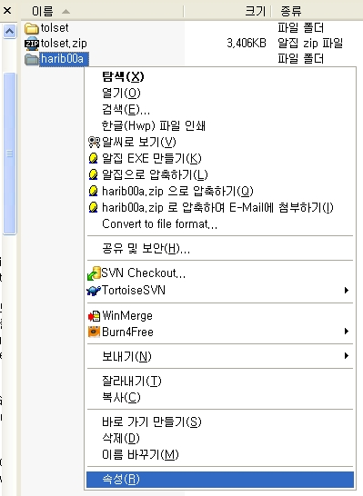
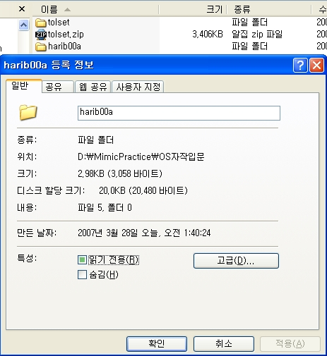
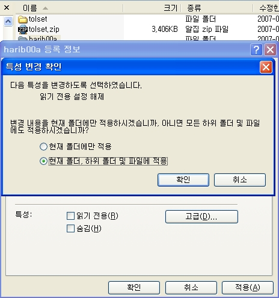

주의사항
-
CD-ROM에서 하드 디스크에 복사하면 [읽기 전용]의 속성이 붙습니다.
파일이 읽기 전용 속성이면,
그 파일을 변경하거나 덮어 쓰기가
불가능하게 되어 수정하여 활용하는 데 불편합니다.
-
읽기 전용 속성을 제거하려면 CD-ROM에서 하드 디스크에 파일을 복사한 뒤에,
그 파일의 속성(Property)을 열어서 읽기 속성 체크를 해제해야 합니다.
harib00a 폴더의 읽기 전용 속성을 해제하려면 다음 그림과 같이
harib00a 폴더를 오른쪽 버튼으로 선택하고 속성을 선택합니다.

-
그럼 다음과 같은 속성 화면이 나타나고 "읽기 전용(R)"이라는 체크 박스를
볼 수 있습니다.

-
Windows2000에서는 폴더의 속성(Property)에서 읽기 전용 속성을 제거하면,
다음 그림과 같이 "변경 내용을 현재 폴더에만 적용하시겠습니까,
아니면 모든 하위 폴더 및
파일에도 적용하시겠습니까?" 변경을 이 폴더만 적용하든지"모든 하위 폴더(Sub Folder)와 파일까지 적용할지를
선택해 주십시오"라고 표시되고, "이 폴더 및 하위 폴더(Sub Folder)에 변경을 적용한다"
를 선택할 수 있습니다. 이 기능을 이용해서 가령
harib00a 폴더에서 읽기 전용 속성을
제거하고 확인 버튼을 누르면, 안에 있는 파일을 한꺼번에 읽기/쓰기 가능으로 설정할 수 있게 됩니다.

-
다른 Windows에서는 이와 같은 기능이 있을지 없을지는 시간이 없어서 확인할 수
없었습니다. 여러분이 연구해서 어떻게든 해 보세요.
tolset에 넣은 QEMU는, Widows2000이상이 아니면 잘 움직이지 않는 것 같습니다. 죄송합니다.
그래서 더 오래된 버전의 QEMU를 찾아 본 결과,
Windows95 이상에서도 움직이는 것이 발견되었습니다.
이 오래된 버전의 QEMU를 사용하고 싶은 분은 tolset/z_tools/의 qemu폴더 이름을
qemu_nt로 변경하고, qemu_9x폴더의 이름을 qemu로 변경해 주십시오.
오래된 버전의 qemu는 Windows2000 이상에서도 문제없이 움직이는 것처럼
보입니다만,
일부 조작이 본문의 설명과 다릅니다. 예를 들면, 마우스를 QEMU에서 떨어지게 하는 것은
Ctrl+Alt가 아니고, Shift+Ctrl입니다.
또 일부 환경에서는, 이 오래된 버전의 QEMU는 색이 이상하게 되는 등의 오동작도
있을 것 같습니다. 그렇지만 전혀 움직이지 않는 것보다는
나을 것이라 생각되므로
필요에 따라서 활용하여 주십시오.